Coucher de Soleil sur les Dunes
Dunes & Couchers de Soleil

Suite sous Tente de Luxe
Bivouac de Luxe
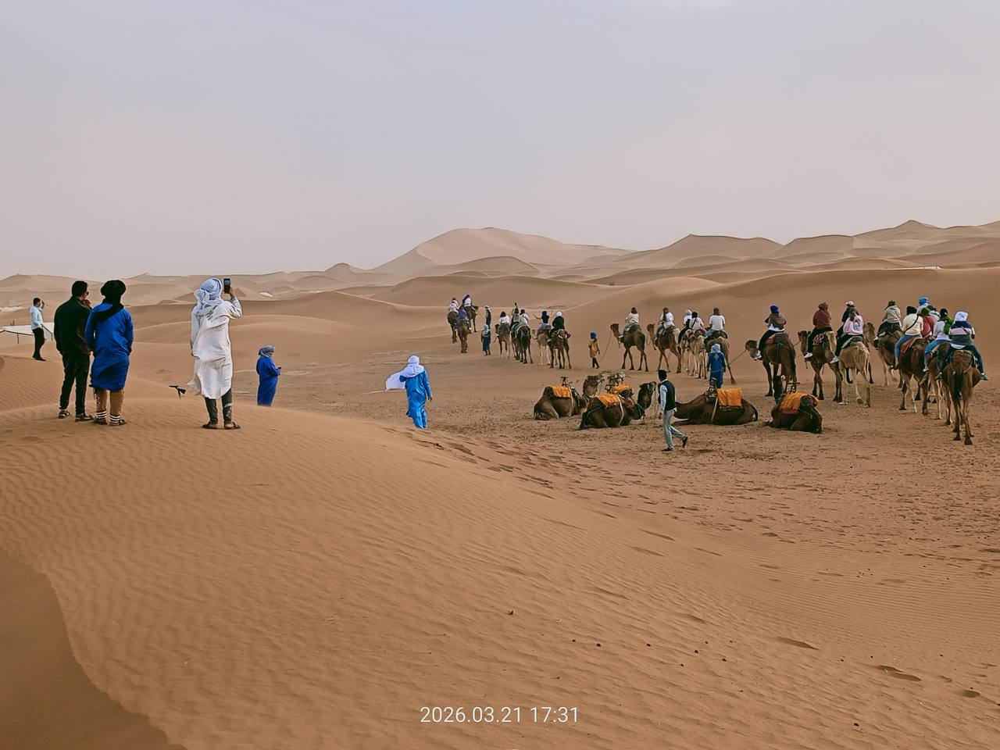
Vagues de Sable Doré
Dunes & Couchers de Soleil

Salle de Bain Privative
Bivouac de Luxe
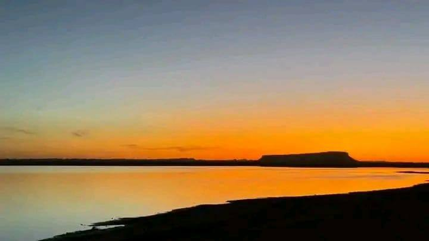
Traversée 4x4 du Désert
Aventures & 4x4
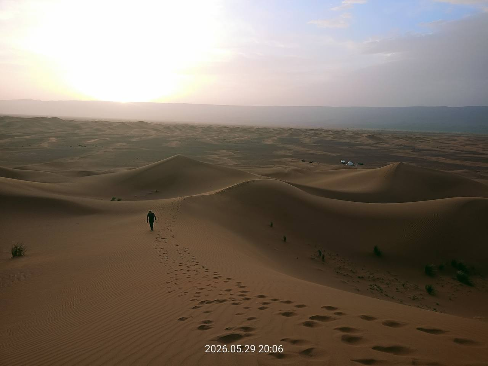
Hospitalité Nomade
Vie Nomade
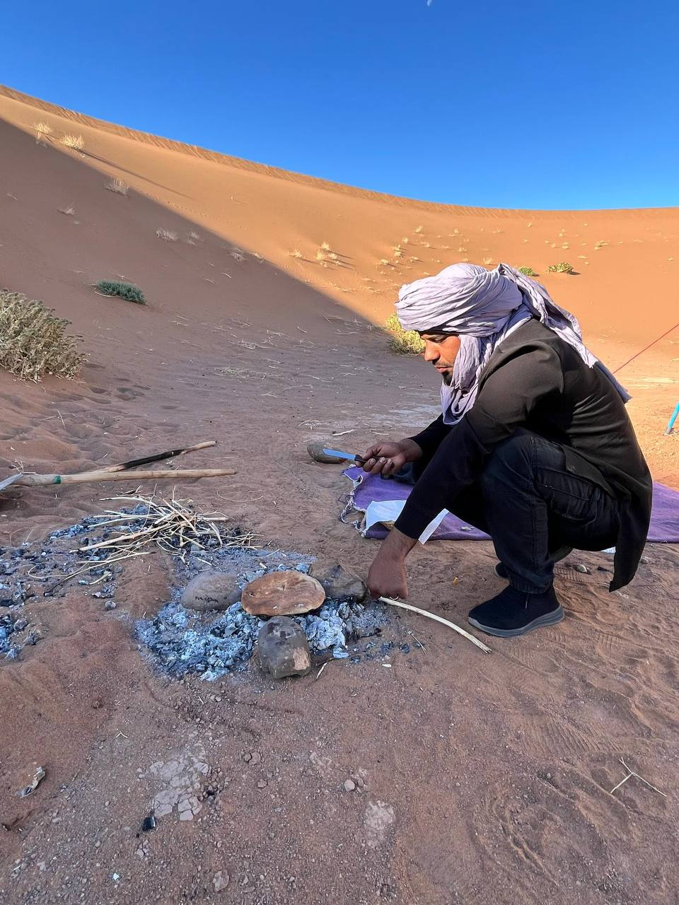
Crête de Dune Géante
Dunes & Couchers de Soleil

Dîner aux Chandelles
Bivouac de Luxe

Méharée au Coucher du Soleil
Aventures & 4x4

Expédition en Quad
Aventures & 4x4

Sandboarding sur Dunes
Aventures & 4x4

Veillée Tambours au Feu
Vie Nomade
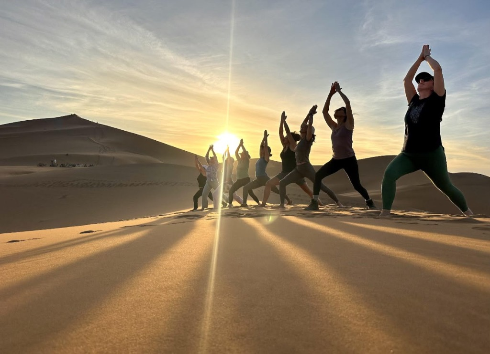
Yoga & Méditation Désert
Aventures & 4x4
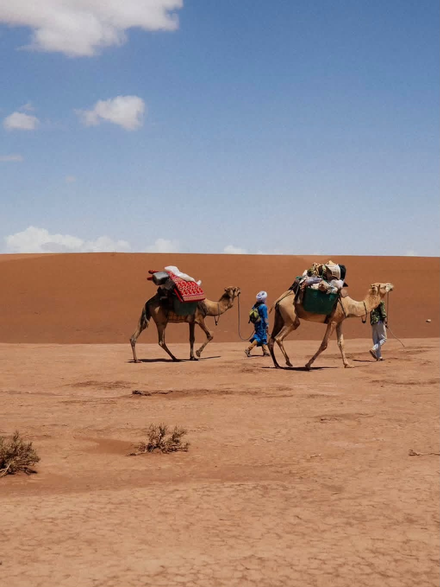
Chèche Nomade Traditionnel
Vie Nomade
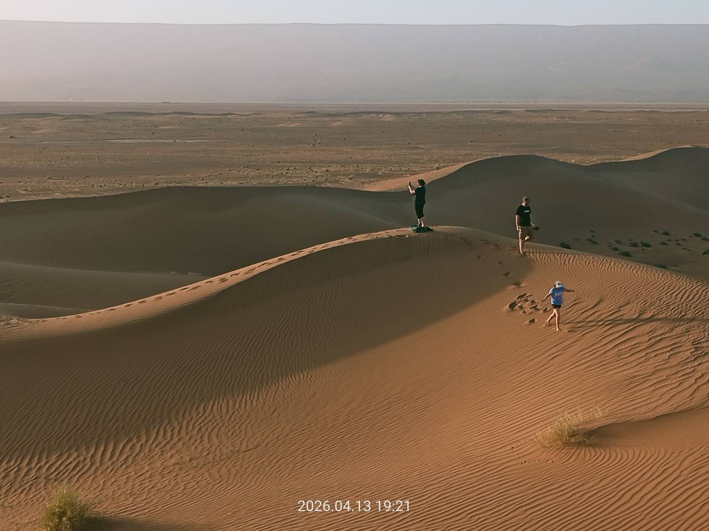
Salon Extérieur Panoramique
Bivouac de Luxe

Lueurs Dorées du Matin
Dunes & Couchers de Soleil
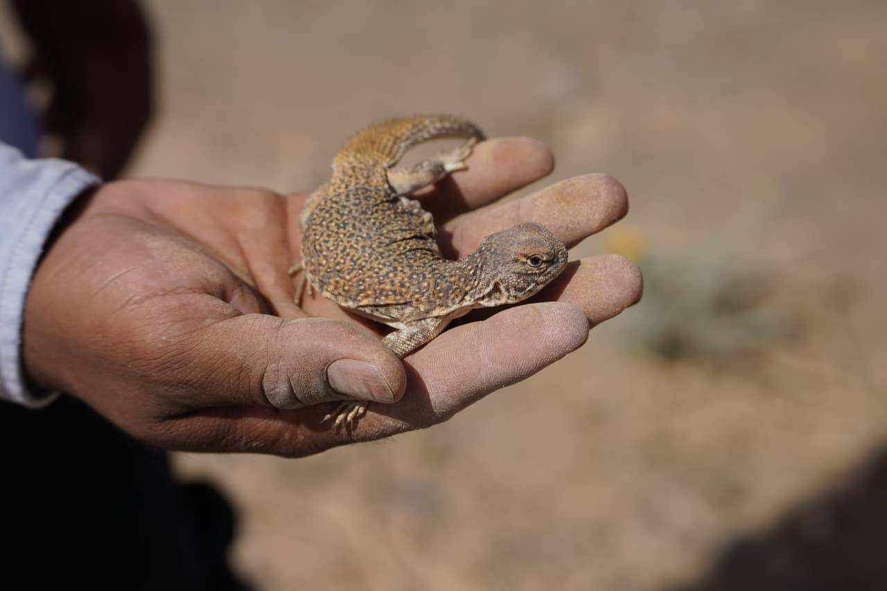
Plaines Salées du Lac Iriki
Aventures & 4x4
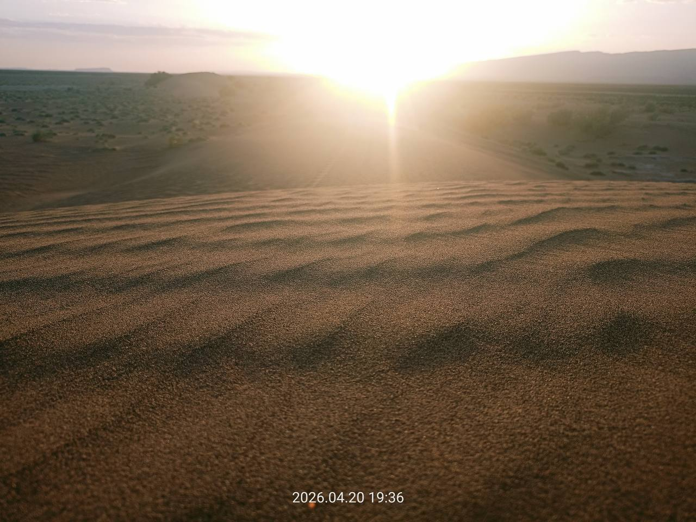
Cadre du Bivouac de Luxe
Bivouac de Luxe
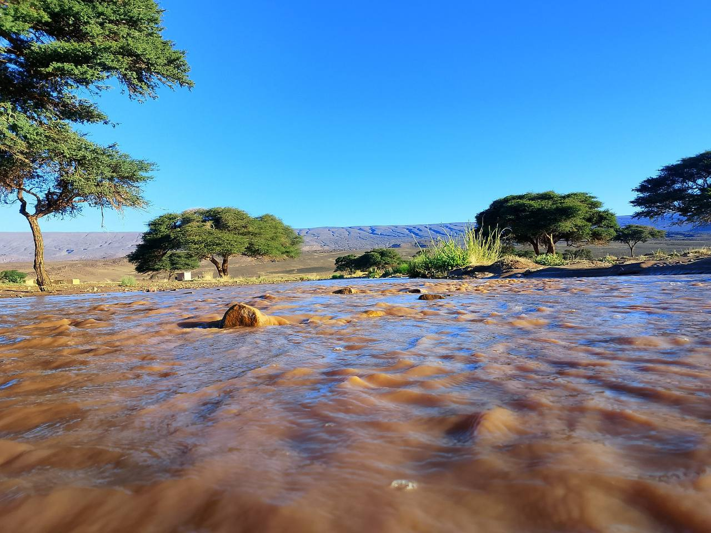
Cérémonie d'Accueil Berbère
Vie Nomade
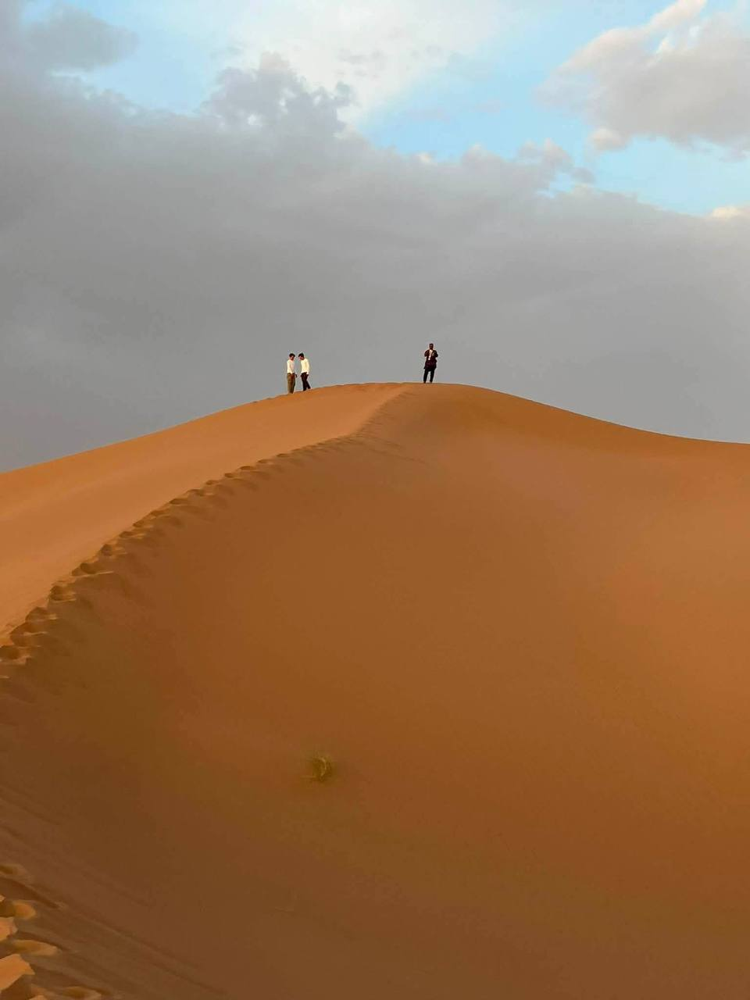
Ombres et Arêtes du Désert
Dunes & Couchers de Soleil
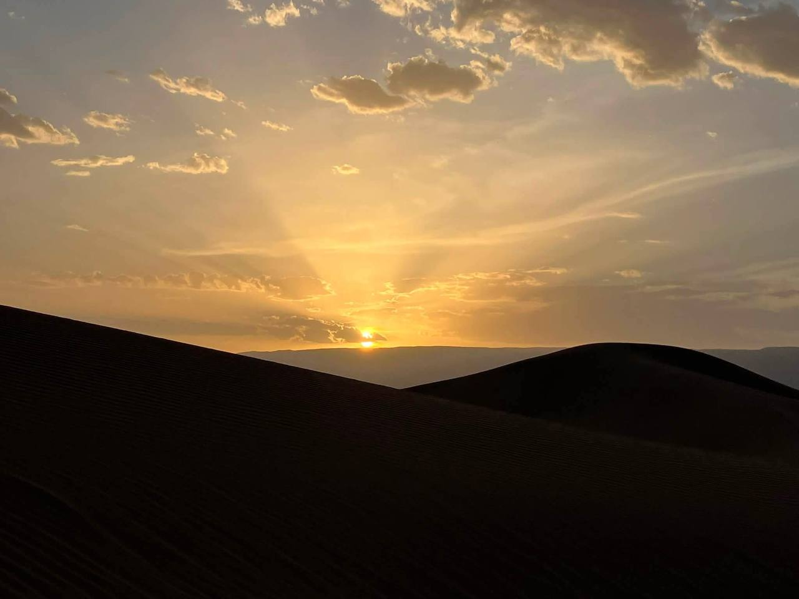
Nuit Saharienne Illuminée
Bivouac de Luxe
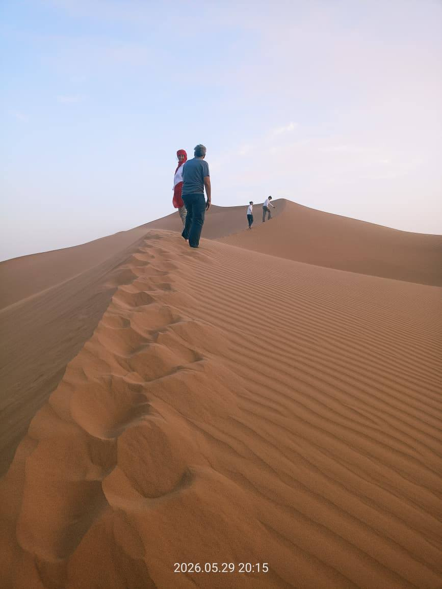
Horizons Infinis du Sahara
Dunes & Couchers de Soleil
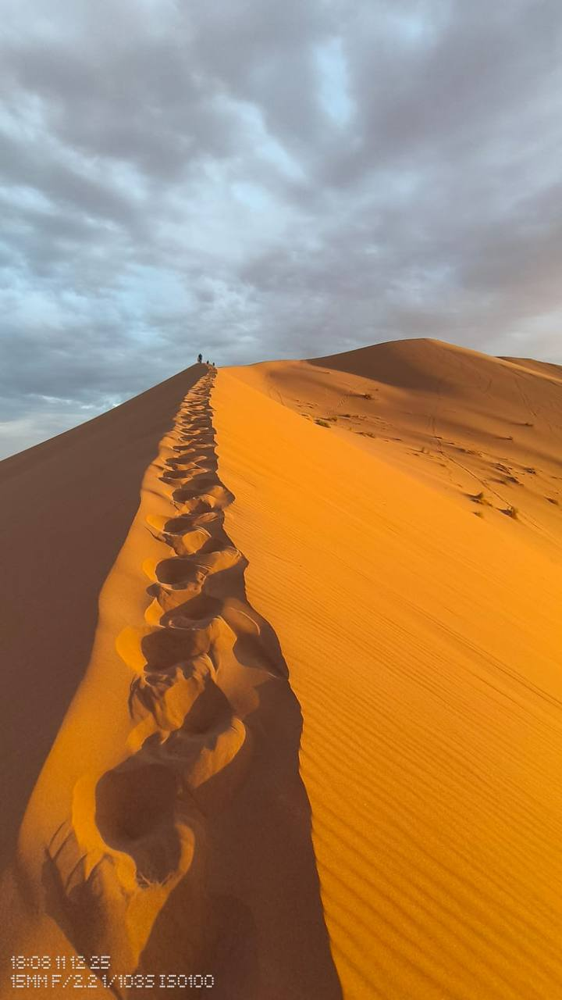
Silhouette de Caravane
Aventures & 4x4
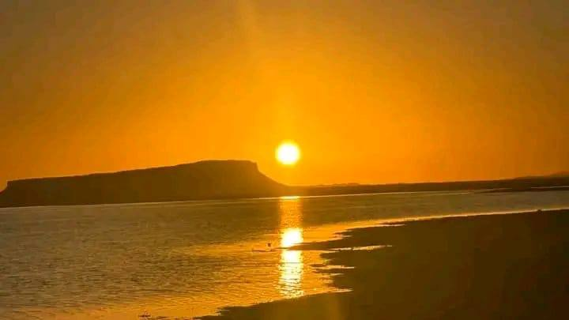
Héritage Nomade Saharien
Vie Nomade